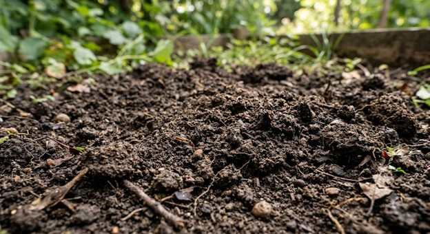
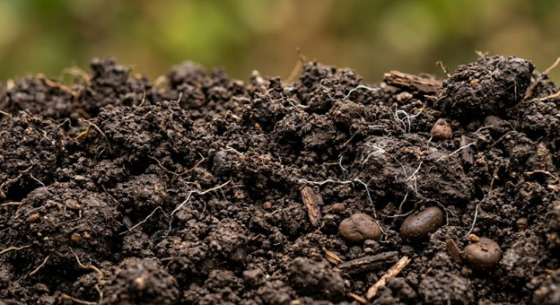

At Dirt Invest, we believe that land is one of the most enduring and valuable investments available. Our mission is to identify, acquire, and develop high-potential land opportunities that create long-term value for our investors, partners, and communities. Through market expertise, strategic planning, and a commitment to responsible stewardship, we transform raw land into opportunities for growth and prosperity. Whether investing in residential, commercial, or agricultural properties, Invest Dirt is dedicated to building a stronger future—one acre at a time.

We strive to identify opportunities with strong potential, maximize returns for our investors, and contribute positively to the development of the communities we serve. By combining market insight, responsible decision-making, and a long-term perspective, we aim to be a trusted leader in dirt investment.